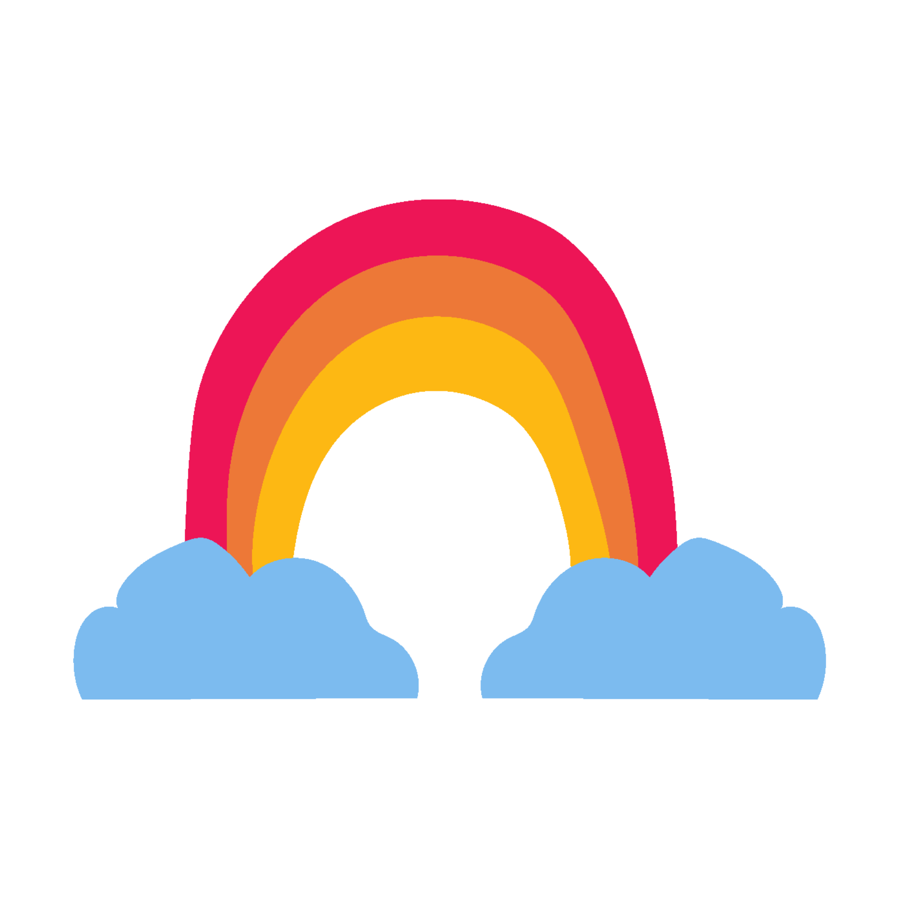
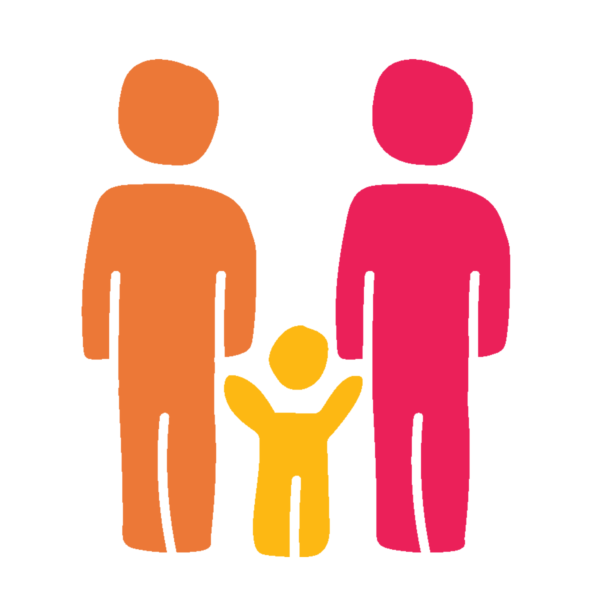

Así se usa el Directorio de reportes
El directorio reúne los reportes del Plan 20·40 —semanal, mensual, visitas, salud y más— en una sola página que funciona en computadora y celular, sin instalar nada.
Abrir el directorio →
Cómo abrir un reporte
Tres pasos, la primera vez con tu sesión institucional.
- Entra al directorio con el botón de arriba (guárdalo en favoritos). Verás los apartados y el buscador.
- Da clic en la tarjeta del reporte que necesitas. Se abre un panel con su vista previa, su frecuencia y su fecha de actualización.
- Elige "Ver en grande aquí" o "Abrir en SharePoint". La primera vez te pedirá iniciar sesión con tu correo institucional, y después recordará tu sesión.

Qué hay en cada apartadoEl menú de la izquierda (o el botón ☰ en celular) organiza los reportes por su uso.
Reuniones de seguimiento
Lo que se revisa en las juntas: el Reporte Semanal (avance de la semana) y el Reporte Mensual (panorama integral mes por mes).
Panorama del Plan
El pulso general: One Page de indicadores por pilar, Tablero de metas, Altas y Bajas del padrón y Descargas de Maestros.
Visitas
Todo el visiteo en tres bloques: Operación (desempeño de guías), Plan de visitas por mes y Herramientas (generador de listados).

Acompañamiento
Cercanía con las familias: Acompañamiento a Embarazadas y el reporte mensual de Formación.
Para guías
Datos de consulta para el día a día, como Pendientes por Niño.
Reportes por pilar
Los reportes especializados de cada pilar. Un pilar en cero señala un hueco por cubrir; hoy Salud concentra nutrición, cartillas y vacunas.
Análisis y diagnósticos
Estudios a fondo, como el histórico de Situaciones Críticas (archivo cifrado: pide su contraseña al abrirlo).
Lo que te dicen las tarjetas
- "Actualizado hace 2 h / ayer / el 5 oct" — la fecha real en que se generó ese reporte, no un estimado.
- Semanal / Mensual / Permanente — cada cuándo se actualiza.
- Buscador (arriba) — escribe cualquier palabra ("vacunas", "embarazadas") y filtra al instante.
- Ordenar por — más recientes, nombre o frecuencia, dentro de cada apartado.
- Vista de tarjetas o de lista — con los dos botones a la derecha de cada listado; tu elección se recuerda.
¿Falta un reporte o algo no abre?
Usa el botón "+ Solicitar reporte" (arriba a la derecha del directorio): abre un correo con tu solicitud lista para enviar. Y si un reporte te pide permiso de SharePoint, responde a este correo para compartírtelo.